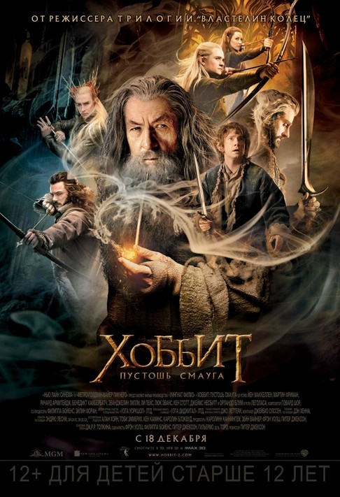

Сюжет трилогии "Хоббит"
Накануне своего 111-летия хоббит Бильбо Бэггинс начинает записывать полную историю своего приключения 60-летней давности для своего племянника Фродо.Задолго до участия Бильбо, король гномов Трор из рода Дурина принёс процветание для своего рода под Одинокой горой, пока не прилетел дракон Смауг. Уничтожив близлежащий город Дейл, Смауг выгнал гномов с горы и забрал их запас золота. Внук Трора Торин Дубощит видит короля Трандуила и его Лесных эльфов на соседнем холме и потрясён, когда они уходят, а не помогают его народу, что приводит к вечной ненависти Торина к эльфам.
В Шире 50-летний Бильбо из-за хитрости Гэндальфа Серого организует ужин для Торина и его компании гномов, в которую входят: Балин, Двалин, Фили, Кили, Дори, Нори, Ори, Оин, Глоин, Бифур, Бофур и Бомбур. Цель Гэндальфа — нанять Бильбо в качестве «вора» компании, чтобы помочь им в поиске входа в Одинокую гору. Поначалу Бильбо не хочет соглашаться, но после того, как компания уходит без него на следующий день, меняет решение. Бильбо в спешке догоняет группу. По пути компания попадает в плен к трём троллям. Бильбо отговаривает троллей от поедания их до рассвета, а Гэндальф направляет солнечный свет на троллей, превращая их в камень. Компания находит пещеру троллей и лежащие внутри сокровища и эльфийские клинки. Торин и Гэндальф берут себе эльфийские клинки, Оркрист и Гламдринг, соответственно; Гэндальф также находит эльфийский кинжал, который он отдаёт Бильбо.
Волшебник Радагаст Бурый находит Гэндальфа и компанию и рассказывает о встрече в Дол Гулдуре с Некромантом, колдуном, который оскверняет Лихолесье тёмной магией. Убегая от орков, Гэндальф ведёт группу через скрытый проход в Ривенделл. Там лорд Элронд рассказывает о тайном знаке, указывающем на секретную дверь на карте компании. Тайный знак будет виден только в день Дурина. Позже Гэндальф присутствует на Белом совете, состоящем из Элронда, Галадриэль и Сарумана Белого, и показывает моргульский клинок, оружие короля-чародея Ангмара, который Радагаст раздобыл в Дол Гулдуре, как знак того, что Некромант связан с возможным возвращением Саурона. В то время как Саруман выражает беспокойство по поводу более существенного вопроса похода гномов, прося, чтобы Гэндальф положил поискам конец, Гэндальф телепатически сообщает Галадриэль, что он ожидал этого и сказал гномам идти вперёд без него.

Компания отправляется в Туманные горы, где оказывается в центре эпической битвы между Каменными гигантами. Группа укрывается в пещере и попадает в плен к гоблинам, которые отводят гномов к своему вожаку Верховному гоблину. Бильбо отделяется от гномов и попадает в расщелину, где встречает Голлума, который случайно роняет золотое кольцо. Спрятав кольцо в карман, Бильбо сталкивается с Голлумом. Они играют в загадки, заключая пари: Голлум покажет Бильбо выход, если Бильбо победит, или съест его, если тот проиграет. Бильбо в конечном итоге побеждает, спрашивая Голлума, что у него в кармане. Заметив, что его кольцо потеряно, Голлум понимает, что оно у Бильбо, и преследует его. Бильбо обнаруживает, что кольцо дарует ему невидимость, но когда у него есть шанс убить Голлума, щадит его жизнь из жалости и бежит, проклинаемый Голлумом.
Тем временем Верховный гоблин рассказывает гномам, что Азог, военачальник орков, убивший Трора и потерявший руку в битве возле Восточных ворот Мории, назначил за Торина награду. Появляется Гэндальф и помогает гномам сбежать, убивая Верховного гоблина. Бильбо находит выход из горы и присоединяется к компании, сохраняя в секрете своё недавно полученное кольцо. Компания попадает в засаду Азога и его отряда орков и укрывается на деревьях. Торин сражается с Азогом, но уступает, его сильно ранит варг. Бильбо спасает Торина от орков и бросает вызов Азогу, в то время, как компанию спасают орлы, которых послала Галадриэль. Группа убегает в безопасное место Каррока, где Гэндальф исцеляет Торина. Торин благодарит Бильбо за спасение. Компания видит Одинокую гору вдалеке. Дрозд, разбивающий улитку о камень, разбудил спящего Смауга.